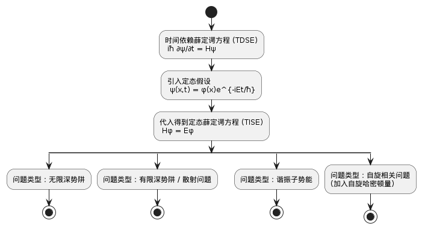

量子力学速成版*
这个我不称之为整理而是速成，因为深知有更优秀的教材辅导，我给出我的路径
学一门课，先懂了它想干嘛，之后在搞定方法，基本上就算是学有所成了
太难写啦：建议看结尾关于考试内容部分
1. 哲学理解部分
理清概念
物理规律如何描述？我们可以把想研究的对象每一个状态表达出来，这样想知道什么就查看对应状态即可，因此我们来研究的是状态。 量子力学中，状态被封装在函数里，即波函数 \(\psi(x,t)\) .随时间演化满足薛定谔方程（在教材中这被作为假设）：
\begin{equation*} i\hbar\dot{\psi(x,t)}=H \psi(x,t) \end{equation*}H 是哈密顿算符，这个方程被认为等价于量子力学的牛顿方程。
下面解释 算符 ：
为了满足实验中物理量只能取固定值的现象（这也是量子物理的初衷），使用线性代数特征值（还有波动概念，波节也是整数化的这一点另谈），即可测量的物理量变成了（（厄米）矩阵）算符，算符乘上波函数得到了改物理量的值。
厄米矩阵保证了取值为实数。
换一种说法，就是我们有了状态，但我们怎么像原来经典力学一样知道这个对象现在位置速度呢，很简单你用对应算符（位置动量能量……）作用到态函数上就得到一个值，此即所求物理量。 这是怎么得到的呢，看上面的薛定谔方程，我们去求解它，方法是经典的分离变量
\[ H| \psi\rangle=\lambda \psi \]
线代中的 矢量 \(\mathbf{a}\) 似乎和量力 \(|\psi\rangle\) 不同，其实只是换了一套符号：
- \(|\psi\rangle\) 右矢就是一般的列向量，可以表示波函数等等（向量表示函数，这里向量是在 Hilbert 空间，即无限维度的 Euclid 空间，Euclid 空间是有内积的线性空间）。所以量力中，向量和函数同样的（值得思考的问题：什么是向量，向量就是箭头吗）
- \(\langle\psi|\) 左矢则是右矢转置，数学上这两者是对偶空间关系。
个人认为使用左矢和右矢只是方便，方括号看多了觉得很规整。英文中左右分别叫 bra,(c),ket
于是可以得知， \(\left\langle \psi \right|\psi \rangle\) 得到数， \(\left\langle \psi \right|\psi \rangle\) 得到矩阵
量子力学成立时吊诡之处就是波动方程的解无法消除虚数部分（虚数的来源是……），为此波恩做出著名波恩诠释：波函数的模平方为粒子概率。
坍缩 collapse 指的就是算符乘波函数得到了实数值（没有任何神秘之处，因为所有信息本来多都蕴含在波函数里面）
接下来有了很多算符，我们会介绍算符互易性，也就是可交换性。之所以研究这个，是因为我们发现有些算符可以共享特征向量。 如果可以找到几个互相对易的算符，它们构成了空间一组基，我们就把它们称为 CSCO
量子力学后半部分繁复的点在于它用到了许多（所谓数学物理方法）特殊函数和结论，一般课程直接提供或记住即可。 如：厄米多项式
下面是清晰的一个线索，可以直接承接做题的部分：

2. 方法部分
或称之为做题技巧
2.1. 基本知识
厄米矩阵：满足 \(H^{\dagger}=H\) 矩阵
如何解矩阵的特征值——行列式法 （唯一） \[ A-\lambda I=0\]
如何对角化（唯一）： 利用特征值
找基底
2.2. 一些规定
算符中每个量如何得到
2.3. 定理性质
若 V 為有限維空間，則在 V 上任一厄米特運算子的固有向量，恆可做為空間 V 的基底 。 ( When V is finite-dimensional, it is always possible to 和rm a basis with the eigenvectors of a Hermitian operator. )
找空間之綦底＝尋找厄米特運算子之特征向量
作用在有限維空間中任意－厄米特運算子，其矩陣表示永遠可寫成對角線形式。 (Any matrix representation of a Hermitian operator acting in a finite dimensional vector space can always be brought into a diagonal form. )
若二厄米特運算子 A, B 彼此可交換，則此空間上可建立一維基底，同時為運算子 A, B 之固有向量 。 ( If two Hermitian operators A , B commute,one can construct an orthonormal basis of the state space with eigenvectors common to A and B . )
二厄米特運算子 A, B ，若 AB = BA， 則它倆可同時被對角化。 ( If two Hermitian operators A, B commute, they can be simultaneously diagonized.)
公设：
量子公設一
在一特定時間 t。，物理系統的状态，可由狀態空間 V 中特定元素 \(|\psi\rangle\) 來定義。
【量子 公設二】
任何可測量的物理量 A, 皆可以作用在状态空間 V 上的算符 A 來描述；且此運算子必為一厄米特運算子。
【 量 子 公設 三】
一物理量 A 唯一可能的測量結杲·就是其對處運算子 A 之特征值。
【量子公設四】
對一個在己歸一化状态 \(|\psi\rangle\) 下的物理量 A 進行測量，得到实验值或特征值為 an 機率為
\begin{equation*} P(a_n)=|\langle u_n|\psi \rangle|^2 \end{equation*}其中 \(|u_n\rangle\) 為算符 A 特征值 \(a_{n}\) 的歸一化向量 。
【 量子 公設 五】
對狀態為 \(|\psi\rangle\) 之系統，進行一物理量 A 的測量，得到 \(a_n\)， 則測量後此系統將變為 \(P_n|\psi\rangle\) 此 \(P\) 為投影運算子 \(P=|u_n\rangle\langle u_n|\) un 所對慮之歸一化固有向量。
【量子 公設 六 】
狀趨向量随着時間約演變，由薛定谔方程
决定，其中 H(t) 為對處於此系統的能量算符。
厄米矩阵特征值为实数
2.4. 附常见矩阵
自旋（很常见，原因二维是便于考察计算特征值）
3. x
考试内容：
- 能量算波长
- 幺正算符性质证明
- 非坐标轴方向自旋（xz 平面夹角）
- 谐振子x利用升降算符证明
- nlm 计算能量角动量大小
附加： 升降算符本征函数问题